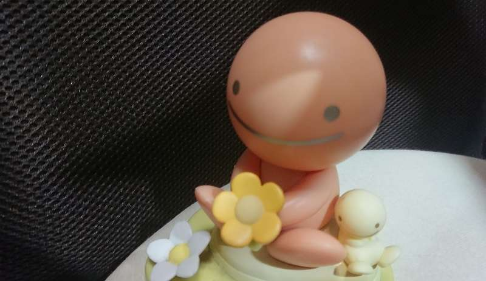
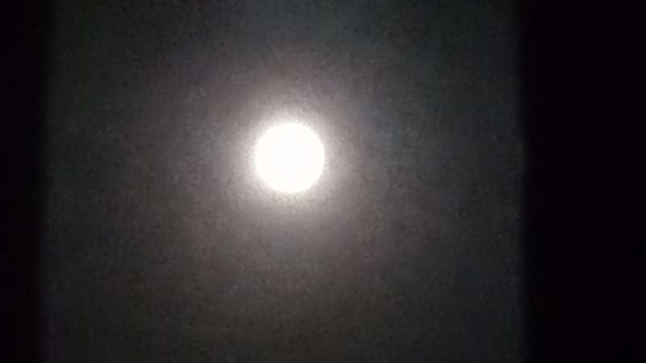
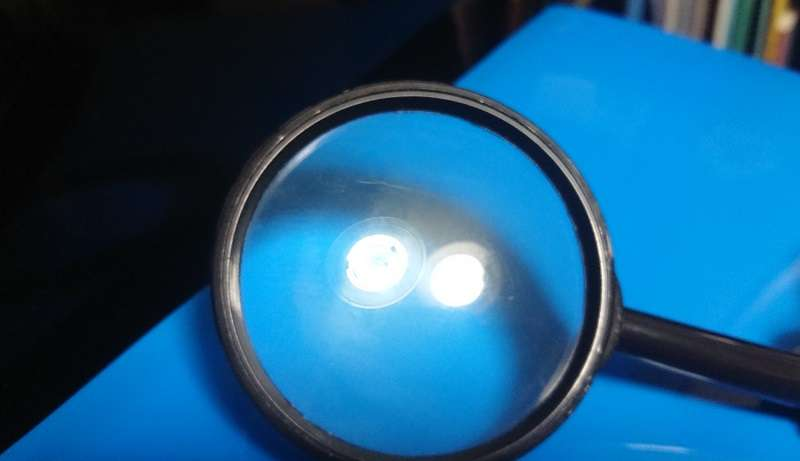
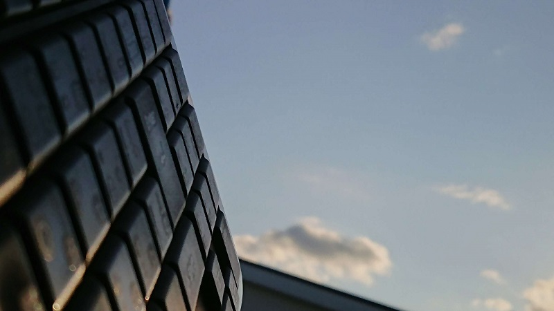
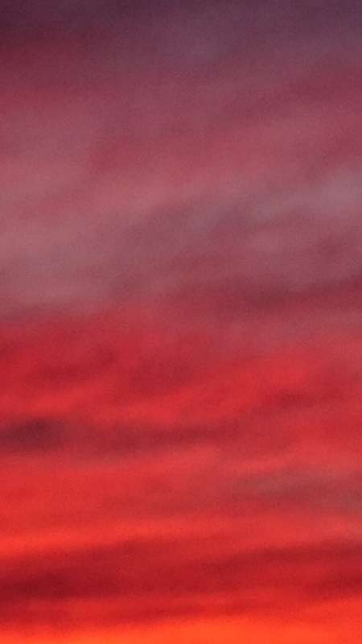
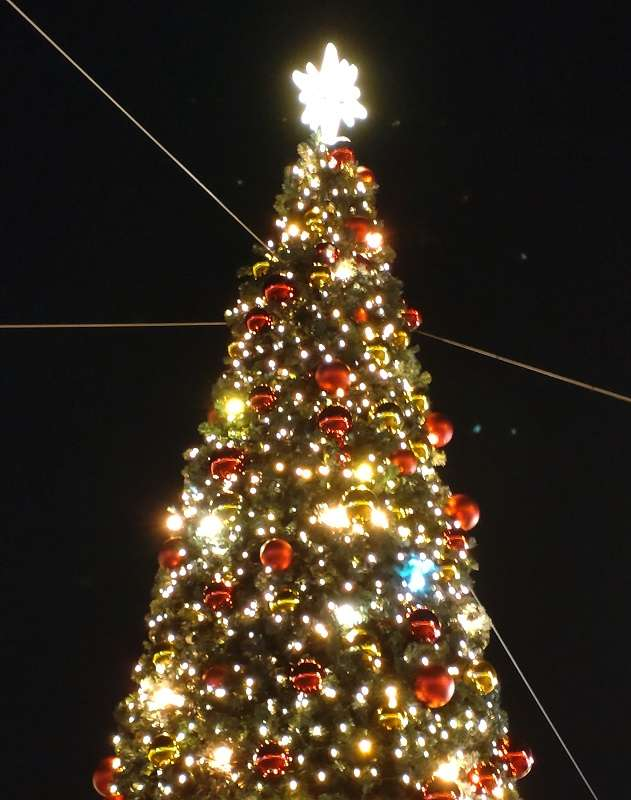

We The
国際パラリン ピック委員会(IPC)は 東京パ
ラリンピック 大会の理念「共生社会」の実現
を目指すた めに今後10年間を各国際機関
と連携し まだまだ世界にある様々な障害者
に対する 偏見や差別
教育や雇用 機会の喪失
それによる 貧困など
それらに対処 すべく法の整備をしていく
運動を展開 していくと発表 前回25％と誤記
してしまったが 現在世界人口の15％にあたる約12億人
の障害者の 人権を考えるキャンペーン
「We The 15」 と題してスタートさせた
障害者になり 得る普通の人々の為にも
我々は人々の 意識を変え 障害を恐れない
社会システムを 構築して より豊かな
多様性を謳歌 できる世界を築いていこう
まん丸い月
9月21日に出る月を中秋の名月と言います
旧暦の8月15日の夜に見える月のこと
15夜のお月様とは 良く聞きますよね 旧暦での呼び名だったんですね
うさぎも思わず跳ね出す明かりなんだね
国立天文台によると 今月21日の満月
中秋の名月が満月の時期と重なるのは2013年以来
8年ぶりだそうです 本当に まんまるですね
この十五夜が農耕行事の収穫祭の意味を持ち
国生みの神イザナギとイザナミによって生まれた三貴神の一人
月読命(ツクヨミノミコト)は月を司る、または夜を統べる神
そして農耕の神としてと崇められた
実りの秋の感謝と来年の豊作を祈願して
米粉で満月の様な まん丸いお団子を15個
ススキを稲穂に見立て、お供えしたという説が有力だそうです
それにしても まんまるですね 見るたびに 吸い込まれそうです
ブラックホールのように 月には人の心を引きつける力がある
不思議だな もしかしたら ちゃんとした理由があるかも知れないですね
そして9月21日は国際平和デーだそうです
この日一日は敵対行為をやめようと国連は呼びかけ
平和の鐘が鳴り響く いっ時でも まん丸い月に引き寄せられて
無心になるのもいいね 子供の時のように無邪気になるのもいいね
それからどうしたのか？（あの日あの時4）
野球のボール大だった 出来始めの宇宙は
10-5 秒後には 太陽系サイズに なったらしい
物質と反物質の対消滅が繰り返され
反物質の方がやや不安定だったのか物質が少し残ったようだ
それが物質の存在理由のようだ そして時空間が生まれた
温度1012 度(1兆度) 当然人間の感覚範囲では無い
その中で ばらばらのクォークが2～3個づつ
グルーオンによってくっつけられる
宇宙背景放射の温度ムラが物質生成の証拠になり
宇宙に広がる そのムラが物質を存在させ
その物質の重力が 互いの物質を引き寄せ
さらなる物質を育んでいったらしい
10-4 秒後 陽子(upクオーク2個とdownクオーク1個)や
中性子(upクオーク1個とdownクオーク2個)が誕生したと言う事だ
よく解らないけど 宇宙の始まりは 物質と反物質 安定と不安定
均一とムラ 同じ物の中から違う物が生まれ
小さな同じ物がくっついたり離れたり
小さな違う物がくっついたり離れたり
超高温から漸次様態が変化し 変化した分違う物が生み出されていく
時空間とは落ち着かない世界の事なんだな
変化がやんだ時 時空間は消滅するのかな
それはそれは たとえ何かが残ったとしても 寂しいだろうな
デジタルの日
自然から生まれた私達は
自然に愛され 愛し 尊ばれ 尊び
自然の中では まだまだ生まれたばかりだ
自然とは何なのか？
そこに生まれた人間とは 何なのか？
自然が総論ならば やっと各論の体系に入ったのか
自然をより細かく具体的に論理的に表現し
そこで生きる私達は それを紡いでいく
それを デジタルと表現するのか
以前は自然と人工 自然と科学など 対比された
これからデジタルは 自然を考察し 分析把握するために
必要かつ重要なアイテムになるのだろうか
初のデジタルの日は 2021年10月10,11日
来年以降は10月第1日曜日と月曜日
未来にシンギュラリティを迎え 人間らしさを表出し
1億8千万年余りを謳歌した恐竜に
うっかり滅びること無く 肩を並べて欲しいものだ
火星ではない
青い地球が変わってしまったのかと思った
これだけ赤いのは 珍しいな
ちょっと前までは あんなに青かったのに
光も 風も 雲も 大気も
見る見る変わって あれよあれよという間に
様変わりして行く 確かに 見ていて飽きない
目を奪われ 心も溶けていく
そこにある物質は それ程 変わらないのに
条件がちょっと違うだけで まったく違う
ちょっとが 面白い 様子が一変
青が赤 地球が火星 火星が地球
身も心も 変な感じ 何かへんよう
表面の変化だけでなく
徐々に中身も変わっていく
知らぬ間に変わっていく
私達 生き物は そんな変容を感じつつ
一喜一憂していくのだろう
ベツレヘムの星
未だ建設中のサグラダ・ファミリア
(スペインのバルセロナに有る世界遺産で「聖家族教会」)
で 2021年の聖母の祝日にあたる12月8日
9つ目の塔「聖母マリアの塔」が完成した
完成時の全18の塔のうち2番目の高さだと言う事だ
そして塔の頂上には5.5トンの鋼鉄とガラスで12の突起が有る星
イエス・キリスト生誕直後に輝いたとされる「ベツレヘムの星」を
象徴した星がローマ教皇フランシスコと人々の頭上に
何一つ隔てることなく輝いた
